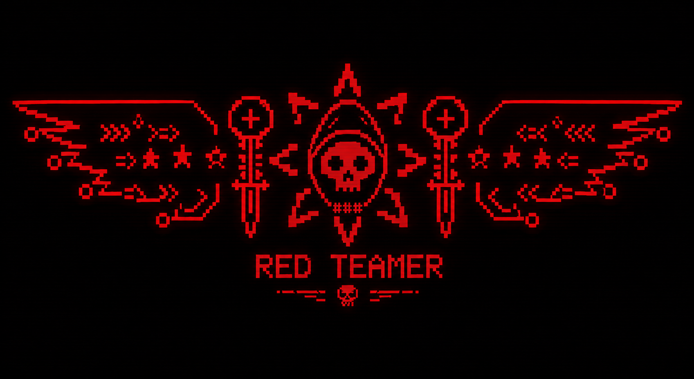

Web and forensics challenges designed to make people slow down and think.
0x02 :: LOOT
Writeups & Challenges
Challenge builds, comp runs, and the sharp little scars left behind by solving under pressure.
University and public CTF events with a mix of fast pivots and longer grinds.
Built — Challenges
Micro-Slop
webA web challenge built around messy logic and deliberate noise, rewarding patient enumeration over rushed guessing.
Flappy Bird JWT
webToken handling and trust assumptions wrapped in a playful surface so the real flaw feels a step behind the obvious one.
Divine Access 1 & 2
webA staged pair of web tasks that escalate access gradually instead of handing the full path away on the first bug.
Palette
webBuilt to reward close inspection of user-controlled input and the assumptions hidden behind polished UI flow.
Forgotten
forensicsA forensic recovery challenge that leans on overlooked traces and the kind of artifacts people usually ignore first.
Warped
forensicsDesigned to distort the obvious trail and force players to validate every assumption before committing to an answer.
Cheat Report
forensicsA report-driven investigation challenge focused on piecing intent, timeline, and evidence into one clean narrative.
Deleted 6 Challenges From GitHub
Raccoon CityLost challenge set. Painful cleanup, but still part of the story and worth keeping on the board.
Solved — Competition
CYCOG-0x01
university ctfRank 113
Early comp run with solid lessons in pace, triage, and not overcommitting to a dead path too fast.
CYCOG-0x02
university ctfRank 24
A much stronger showing with better challenge selection and cleaner execution under time pressure.
Hack or Crack 2.0
university ctfCompetition Run
A grind-heavy event that helped sharpen consistency more than flashy last-minute solves.
boroCTF
worldwide ctfRank 65 / 665 Teams
Open division finish that reflects strong adaptation against a larger and more competitive field.
V1T CTF
worldwide ctfRank ~600 / 800 Teams
Reason: We Didnt play it we left in 1st hr
NO HACK NO CTF
worldwide ctfRank 109 / ~850 Teams
Really high level challanges and taught me alot.
